KL Rippa Loc — location d'engins à Sisteron
KL RIPPA LOC
Location de mini-pelle et mini-chargeuse à Sisteron, sans chauffeur, dès 99 € la journée
Tranchée, terrassement, souches, béton, allée à niveler, talus à débroussailler : louez une mini-pelle RIPPA R10, R15 ou R22, la mini-chargeuse RS06 ou une tondeuse télécommandée à la journée ou pour le week-end. Nous livrons sur votre terrain à Sisteron et jusqu'à 30 km autour. Location réservée aux particuliers.
Nos machines en location et leurs tarifs
Tous nos prix sont TTC. La formule 2 jours correspond à une location sur deux jours à la suite, idéale pour le week-end. Les mini-pelles sont livrées avec deux godets d'origine : un godet de terre et un godet de curage.
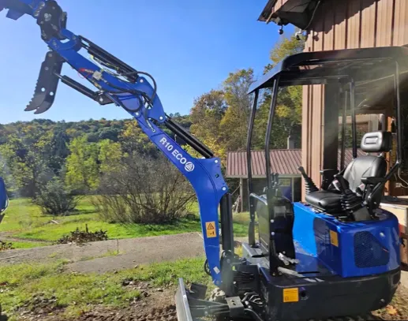
Mini-pelle RIPPA R10
Mini-pelle 1 tonne (1 018 kg), moteur diesel Kubota. Compacte et facile à prendre en main : tranchées, réseaux, petits terrassements, jardin.
- 1 jour 99 €
- 2 jours (week-end) 180 €
Fournie avec : godet de terre + godet de curage 100 cm
Caution : 1 500 €
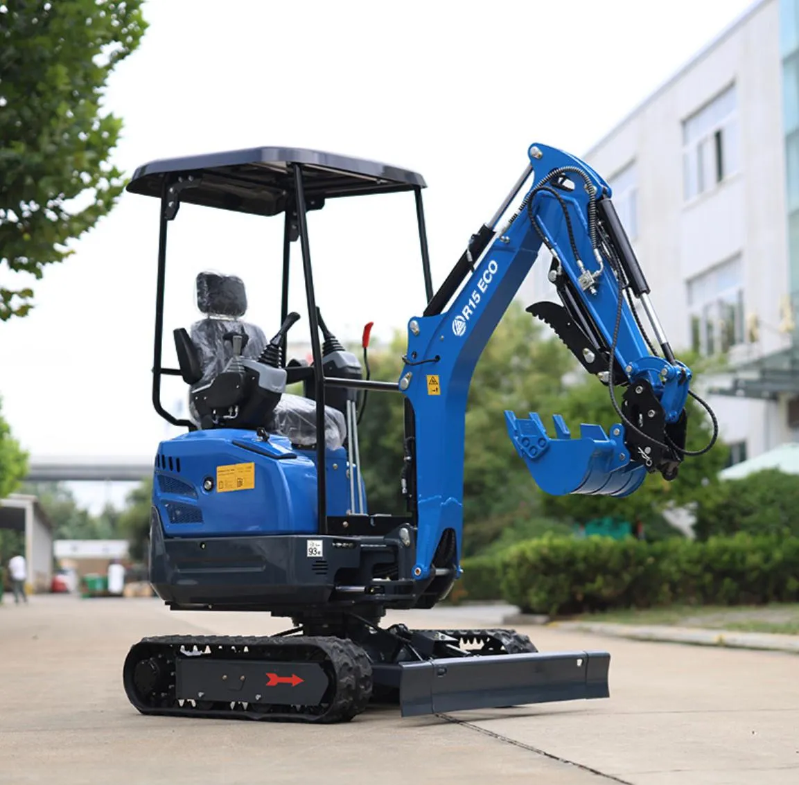
Mini-pelle RIPPA R15
Mini-pelle 1,5 tonne, moteur diesel Kubota. Plus de puissance pour les fondations, fosses et terrassements moyens.
- 1 jour 139 €
- 2 jours (week-end) 250 €
Fournie avec : godet de terre + godet de curage 100 cm
Caution : 2 000 €
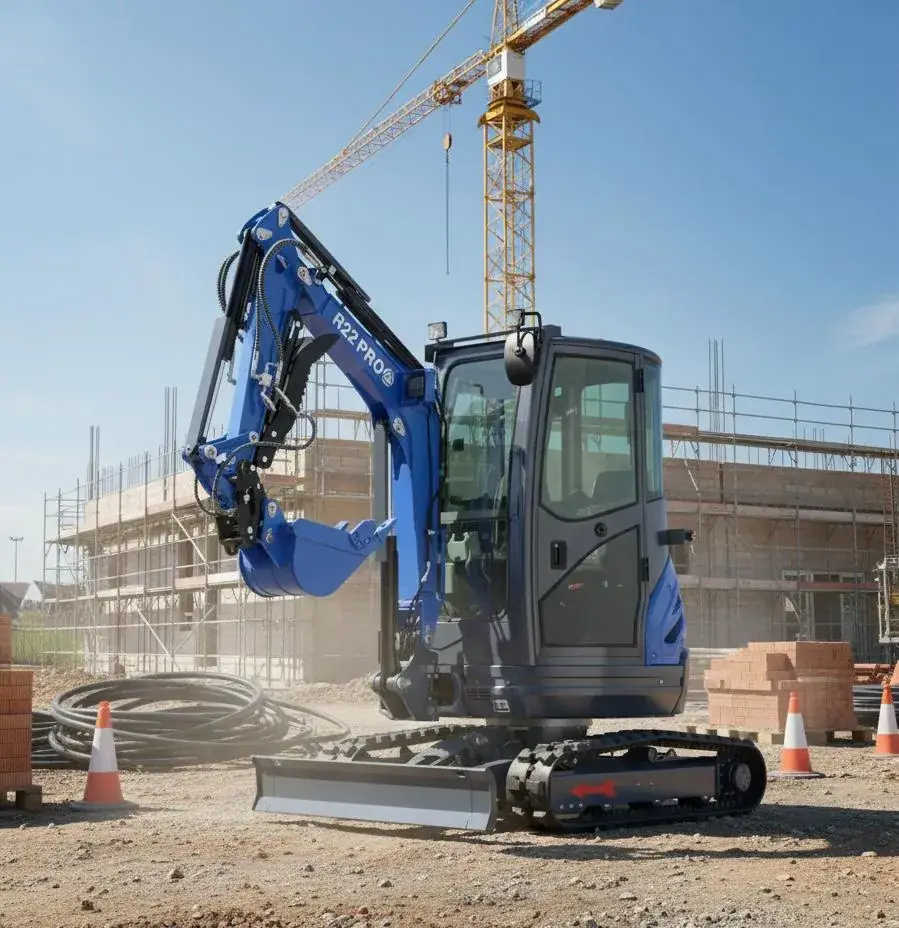
Mini-pelle RIPPA R22
Mini-pelle 2,2 tonnes zéro déport, moteur Kubota D1105, cabine fermée climatisée. Pour les gros travaux et le travail le long des murs.
- 1 jour 169 €
- 2 jours (week-end) 300 €
Fournie avec : godet de terre + godet de curage 120 cm
Caution : 2 000 €
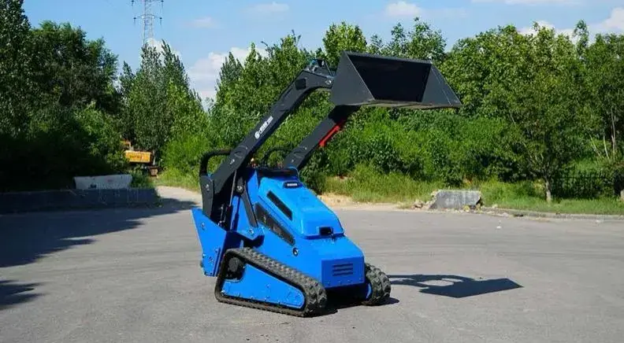
Mini-chargeuse RIPPA RS06
Mini-chargeuse sur chenilles, moteur diesel Kubota 24 ch, charge utile 1 200 kg. Louée avec son godet standard, nombreux accessoires en option.
- 1/2 journée 120 €
- 1 jour 180 €
- 2 jours (week-end) 330 €
Caution : 1 500 €
Accessoires pour les mini-pelles
Chaque mini-pelle est livrée avec son godet de terre et son godet de curage (100 cm pour la R10 et la R15, 120 cm pour la R22). Pour aller plus loin, ajoutez un accessoire. Chaque accessoire est adapté à la taille de la mini-pelle louée.
| Accessoire | Pour quoi faire ? | R10 / R15
par jour TTC | R22
par jour TTC |
|---|
| Râteau | Trier les pierres et les racines, dessoucher, nettoyer un terrain | 20 € | 30 € |
| Godet de terre 60 cm | Creuser des tranchées plus larges et des fondations | 20 € | 30 € |
| Dent de ripper | Casser un sol dur, compact ou caillouteux avant de creuser | 20 € | 30 € |
| Tarière hydraulique | Percer les trous pour poteaux de clôture et plantations | 60 € | 80 € |
Accessoires pour la mini-chargeuse RS06
La RS06 est louée avec son godet standard. Ajoutez l'accessoire adapté à votre chantier : faire du béton sur place, enlever des souches, balayer une cour, déplacer des palettes.
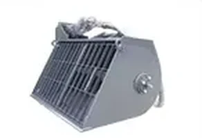
Godet malaxeur
Fabriquer et verser le béton directement sur le chantier
90 € / jour TTC
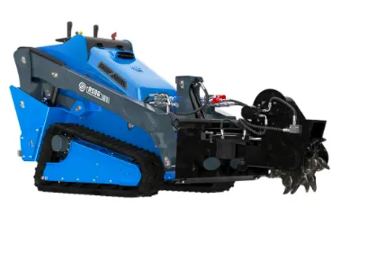
Rogneuse de souches
Broyer les souches d'arbres au ras du sol
90 € / jour TTC
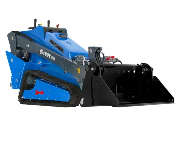
Godet 4 en 1
Charger, pincer, niveler et racler avec un seul godet
50 € / jour TTC
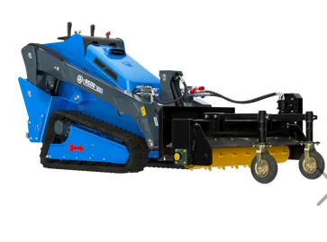
Balayeuse
Nettoyer une cour, une allée ou un chantier
60 € / jour TTC
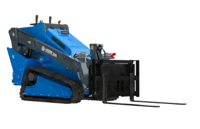
Fourche à palettes
Déplacer des palettes et des charges
35 € / jour TTC
Godet malaxeur : il doit être rendu entièrement nettoyé, sans béton durci. Sinon, un forfait de nettoyage de 150 € TTC est appliqué.
Tondeuses et broyeurs télécommandés en location
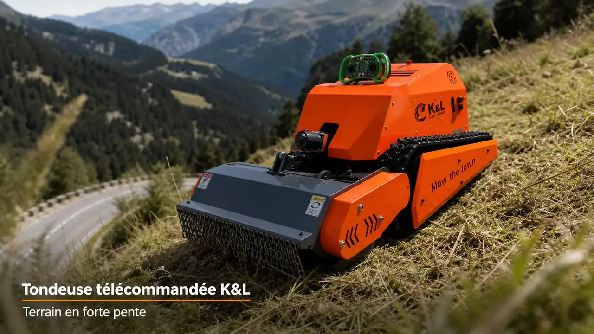
Talus, fortes pentes, terrain en friche, verger : pilotez la machine à distance, sans vous mettre en danger dans la pente. Découvrez aussi notre gamme de tondeuses télécommandées en vente.
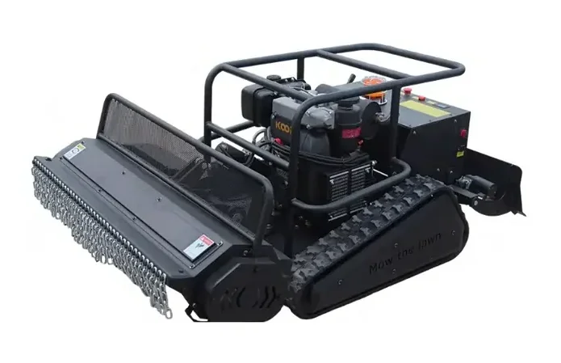
Broyeur télécommandé KL-1000
Broyeur à fléaux sur chenilles, 100 cm de largeur de coupe. Pour les herbes hautes, les broussailles et les talus.
Caution : 1 000 €
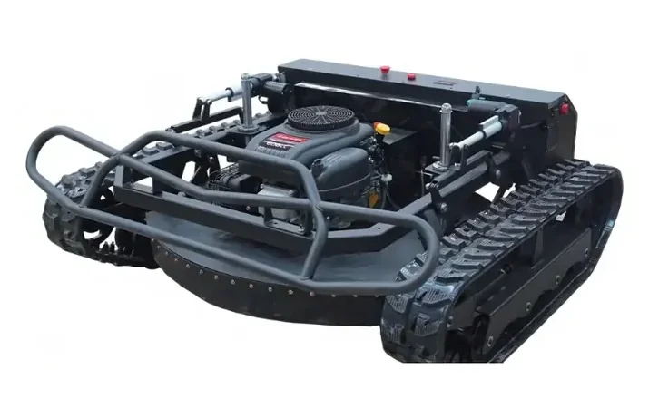
Tondeuse télécommandée KL-900
Tondeuse tank sur chenilles, 90 cm de largeur de coupe. Très stable dans les pentes raides, les terrains boueux et caillouteux.
Caution : 1 000 €
Livraison à Sisteron et jusqu'à 30 km
Nous livrons la machine sur votre terrain depuis notre dépôt de Sisteron, et nous revenons la chercher à la fin de la location : le prix comprend l'aller et le retour. Par exemple : Château-Arnoux-Saint-Auban, Peipin, Volonne, Mison, Laragne-Montéglin, Ribiers, Malijai, Les Mées, Peyruis, Noyers-sur-Jabron…
| Distance depuis Sisteron | Livraison aller-retour TTC |
|---|
| De 0 à 10 km | 70 € |
| De 10 à 20 km | 80 € |
| De 20 à 30 km | 90 € |
Conditions de location
- Particuliers uniquementLa location est réservée aux particuliers, pas aux professionnels.
- 18 ans minimumLe locataire doit être majeur.
- Sans chauffeurVous utilisez la machine vous-même, sur votre terrain.
- Caution1 000 € pour les tondeuses et broyeurs, 1 500 € pour la R10 et la RS06, 2 000 € pour la R15 et la R22.